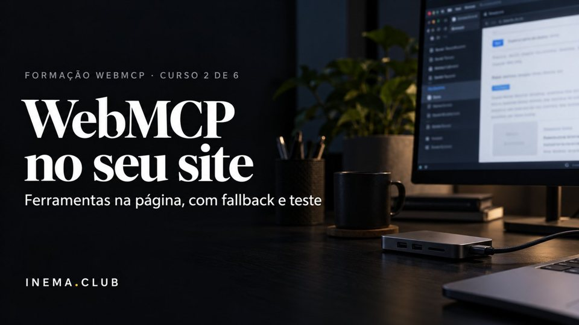
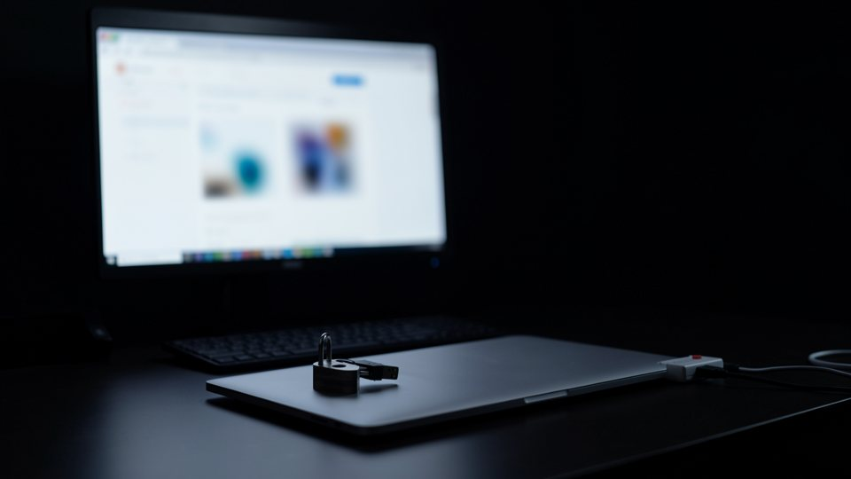

Formação WebMCP · curso 5 de 6 · o último · 8 aulas
WebMCP em produção: página, servidor, bateria e relatório
Sirva a mesma ação pela tela, pelo WebMCP na página e por um servidor MCP, com uma regra só. Registre cada chamada, congele a bateria, vigie a spec e desligue uma ferramenta sem deploy. WebMCP é rascunho de 16/10/2026: produção aqui é preparar com teste, não apostar.
- 8aulas
- 7verificações no relatório final
- 4modos de teste: sem API, polyfill, nativo e MCP
- 0chamadas de modelo ou API paga
Os 6 cursos da formação
Este é o curso 5, o último. A aula 8 junta as peças dos seis. Ordem sugerida: 0 → 1 → 2 → 3 → 4 → 5.
- Curso 0Base: como os agentes usam um siteLer, operar a tela ou chamar ferramenta; árvore de acessibilidade; estável × rascunho; diagnóstico do seu site.Abrir o curso
- Curso 1Servidor MCP do seu serviçoSDK oficial v2 na revisão 2026-07-28: ferramentas, Streamable HTTP sem estado, MRTR, OAuth e MCP Apps.Abrir o curso

Curso 2WebMCP no seu sitedocument.modelContext com detecção e fallback, ciclo de vida, anotações, confirmação e bateria nos três modos.Abrir o curso- Curso 3Agentes de navegadorTestar o site como o agente vê: Playwright MCP, Chrome DevTools MCP e a bateria de tarefas do seu site.Abrir o curso

Curso 4Segurança entre site e agentePrompt injection, dado como dado, confirmação, exposição, servidor seguro e identidade de quem chega.Abrir o curso- Curso 5 · você está aquiWebMCP em produçãoTrês superfícies, registro, bateria congelada, vigia de spec, governança e o relatório do seu site.Abrir o curso
As aulas
Das 8 camadas ao relatório: três superfícies, registro, bateria congelada, protocolos vizinhos, vigia de spec e governança.
- Aula 1 · 14 minArquitetura em camadas revista com o estado de out/2026Um site pronto para agentes não é uma API: são oito camadas, das que descrevem o site às que o protegem. A área WebMCP já tinha esse mapa; aqui ele volta com o status de cada camada em 19/10/2026 e um script que procura no seu código a evidência de cada uma.
 Aula 2 · 18 minUma ação, três superfícies: HTML, WebMCP na página e MCP no servidorA mesma reserva pode chegar pela pessoa no formulário, por um agente dentro do navegador (WebMCP) ou por um agente fora dele (MCP). Se cada caminho tiver a sua cópia da regra, elas divergem. Nesta aula a regra mora num arquivo só, e um script prova que as três superfícies respondem igual e pedem a pessoa.
Aula 2 · 18 minUma ação, três superfícies: HTML, WebMCP na página e MCP no servidorA mesma reserva pode chegar pela pessoa no formulário, por um agente dentro do navegador (WebMCP) ou por um agente fora dele (MCP). Se cada caminho tiver a sua cópia da regra, elas divergem. Nesta aula a regra mora num arquivo só, e um script prova que as três superfícies respondem igual e pedem a pessoa. Aula 3 · 15 minObservabilidade: registrar chamadas, erros e cancelamentosEm produção, "o agente não conseguiu reservar" só se resolve com registro. Cada chamada de ferramenta, em qualquer porta, deixa uma linha: superfície, ferramenta, resultado e tempo. Sem dado pessoal. Nesta aula você provoca os desfechos possíveis e lê o que cada um deixa no log.
Aula 3 · 15 minObservabilidade: registrar chamadas, erros e cancelamentosEm produção, "o agente não conseguiu reservar" só se resolve com registro. Cada chamada de ferramenta, em qualquer porta, deixa uma linha: superfície, ferramenta, resultado e tempo. Sem dado pessoal. Nesta aula você provoca os desfechos possíveis e lê o que cada um deixa no log. Aula 4 · 18 minBateria congelada das suas ferramentas e regressão quando a spec mudaQuando o código ou a spec mudam, o site com WebMCP falha em silêncio: a detecção não acha a API, cai no formulário e ninguém vê. Só uma bateria pega. Nesta aula você congela o contrato e os casos das ferramentas, roda nos quatro modos e vê a bateria pegar o nome antigo da API.
Aula 4 · 18 minBateria congelada das suas ferramentas e regressão quando a spec mudaQuando o código ou a spec mudam, o site com WebMCP falha em silêncio: a detecção não acha a API, cai no formulário e ninguém vê. Só uma bateria pega. Nesta aula você congela o contrato e os casos das ferramentas, roda nos quatro modos e vê a bateria pegar o nome antigo da API.- Aula 5 · 14 minProtocolos vizinhos como mapa: A2A, ACP, AP2, NLWeb, llms.txt — o que é rascunhoToda semana aparece uma sigla nova prometendo deixar o site "pronto para IA". Quase todas estão em rascunho ou proposta, e cada uma vive numa camada diferente. Nesta aula você põe cada protocolo vizinho no mapa, com status e data, e decide para o seu site: adotar, esperar ou não se aplica.
 Aula 6 · 15 minViver com API que muda: vigiar spec, Chrome Status e changelog do MCPA API do WebMCP já mudou de lugar uma vez: de navigator para document. Vai mudar de novo antes de qualquer versão estável. Em vez de descobrir pelo visitante, grave o que as fontes diziam no dia em que a bateria passou e deixe um script comparar. Mudou? Rode a bateria e leia antes de mexer.
Aula 6 · 15 minViver com API que muda: vigiar spec, Chrome Status e changelog do MCPA API do WebMCP já mudou de lugar uma vez: de navigator para document. Vai mudar de novo antes de qualquer versão estável. Em vez de descobrir pelo visitante, grave o que as fontes diziam no dia em que a bateria passou e deixe um script comparar. Mudou? Rode a bateria e leia antes de mexer. Aula 7 · 16 minProdução e governança: quem aprova ferramenta nova, versão, desligar rápidoFerramenta para agente é ação do seu site feita por outro. Precisa de dono, data de aprovação, nível de autonomia e um jeito de sair do ar em minutos, sem quebrar o formulário. Nesta aula o catálogo aprovado vira um arquivo que a página e o servidor leem, um script confere e um estado desliga.
Aula 7 · 16 minProdução e governança: quem aprova ferramenta nova, versão, desligar rápidoFerramenta para agente é ação do seu site feita por outro. Precisa de dono, data de aprovação, nível de autonomia e um jeito de sair do ar em minutos, sem quebrar o formulário. Nesta aula o catálogo aprovado vira um arquivo que a página e o servidor leem, um script confere e um estado desliga.- Aula 8 · 20 minProjeto final: seu site + servidor + bateria + relatórioO projeto final junta as peças: a página com ferramentas, o servidor MCP com a mesma regra, a bateria congelada, o registro, a vigia e o catálogo aprovado. Um script roda as sete verificações e escreve o relatório datado do site. Você sai com ele e com o plano de manutenção para quando a spec mudar.
Para quem é
- 1Quem fez o curso 2 (WebMCP na página) e o curso 4 (segurança), ou já registra ferramentas e roda um servidor MCP.
- 2Dev ou dono técnico que vai manter um site usado por agentes por meses, com a API ainda mudando.
- 3Quem quer provar com teste, não com print, que o site funciona com e sem agente.
O que você sai fazendo
- 1Servir uma ação pela tela, pelo WebMCP e pelo MCP com a mesma regra.
- 2Registrar chamadas, erros, recusas e cancelamentos sem guardar dado pessoal.
- 3Congelar a bateria e pegar a regressão quando a spec ou o código mudam.
- 4Aprovar, versionar e desligar ferramentas pelo catálogo, sem deploy de código.
Onde este curso entra na Formação WebMCP
- 1É o curso 5, o último: junta a página (curso 2), o servidor (curso 1), o olhar do agente (curso 3) e a segurança (curso 4).
- 2Cada assunto que tem dono em outro curso vai por link; aqui fica a operação.
- 3Antes de começar: Node 20 ou mais novo, git e espaço em disco para o Chromium do Playwright.